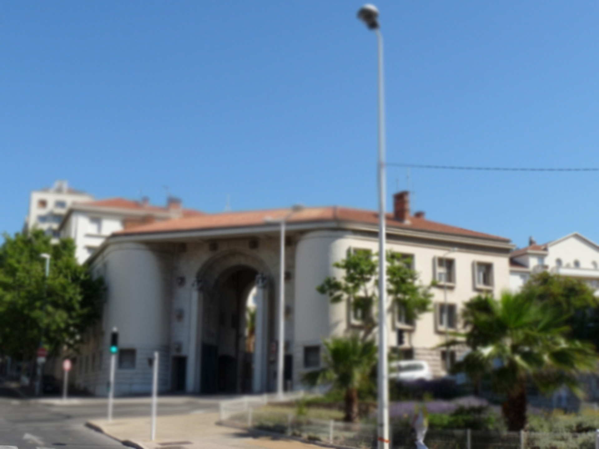

Groupe de Commandement Secrétariat

Missions :
Le secrétariat s'occupe du volet administratif : - Gestion de l'agenda du commandement de groupement et adjoints, - Préparation des cérémonies, - Mise à disposition d'un chauffeur pour le commandement, - Gérer la cellule Organisation-Emploi : - Avoir une vue d'ensemble des unités implantées sur toute la façade Méditerranée, - Attribuer et gérer les événements selon la spécificité des unités, - Avoir une vue globale et permanente des missions des unités et de leur effectifs, - Demander du matérielles pour des exercices ou événements spéciaux (hélicoptère, négociateur...), - Organiser les escortes, - Gestion du budget du groupement. - Gestion des missions globale du GGMARMEDI à travers les 3 compagnies.
Moyens :
- Divers : - Informatique (ordinateurs, logiciels...). - Téléphonie.
Effectifs :
- 4 Personnels : - 1 Adjudant-Chef, 1 Maréchal des logis Chef, 1 Gendarme, 1 Brigadier-chef (Détachement CEMAS). Le gendarme assure également le rôle de chauffeur.